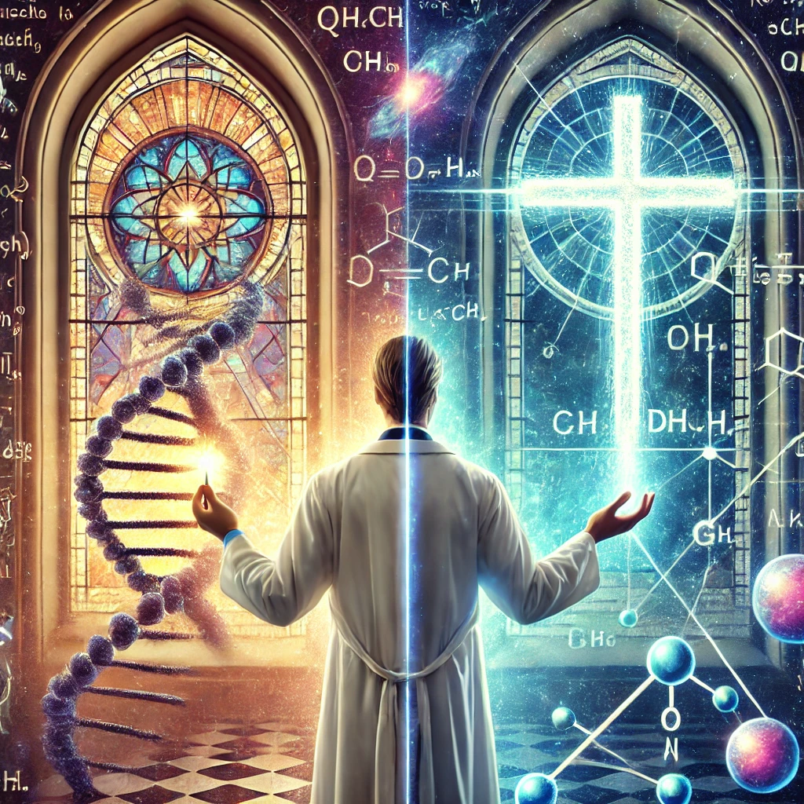

DNA에는 신의 설계가 존재한다고 주장하는 흥미로운 책이었다. 이 책을 읽기 전에는 과학과 종교는 전혀 연관이 없다고 생각했는데 과학과 신앙이 꼭 대립되는 관계는 아니며, 서로 보완관계가 될 수 있다는 것을 깨달았고 인간의 생명에 관해 종교적인 관점에서도 고찰해보는 기회가 되었다.

감상평에 대한 AI평가
사용자가 작성한 감상평은 새로운 깨달음, 열린 사고, 지적 확장의 감정을 담고 있습니다.
✨ - 초반의 감정: 책을 읽기 전에는 과학과 종교가 전혀 연관이 없다고 생각했다는 점에서 고정관념, 선입견, 확신이 있었음을 보여줌.
✨ - 중반의 변화: "과학과 신앙이 꼭 대립되는 관계는 아니며, 서로 보완관계가 될 수 있다"는 깨달음을 통해 사고의 확장, 새로운 시각 발견, 이해의 깊어짐이 느껴짐.
✨ - 후반의 성찰: "인간의 생명에 관해 종교적인 관점에서도 고찰해보는 기회가 되었다"는 부분에서 성찰, 깊은 사고, 균형 잡힌 시각의 형성이 강조됨.
전체적으로 보면 기존의 생각이 변화하고, 새로운 시각을 받아들이며, 깊이 있는 성찰을 경험한 감정이 중심입니다. 지적 성장과 열린 마음이 느껴지는 감상평이에요. 😊